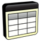
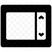

Alguns projetos que aprendi fazendo em curso
Estes são os que julguei mais importantes:
- - Um site responsivo com adição de músicas.
- - Um dos meus sites preferidos.
- - Trabalhando com degradê e organização de texto.
-  - Minha primeira tabela com faixa fixa.
-  - O que é o Iframe e como trabalhar com ele.
- - O projeto me fez descobrir que gosto de trabalhar com links e Iframes.
- - Mostrando minha paixão por praia, com localização, gostando ainda mais de trabalhar com Iframe.
- - Praticando usar formulário.
- - Mais um exercício usando formulário.
- - Não é fácil trabalhar com Media Queries, mas no final deu tudo certo.
- - Algumas coisas que eu gosto, além de praia!
- - Reunindo tudo que aprendi em um único projeto. Esse foi trabalhoso.
- - Minha inspiração pra fazer a trilha de estudos do meu portifólio pessoal.
- - Eu amei ter feito esse projeto, porque além de ser fã de poesias, adorei trabalhar com o efeito Paralax.